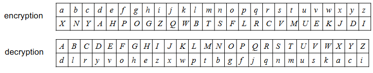
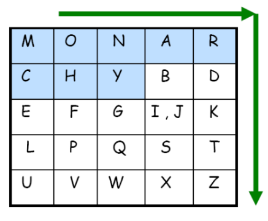
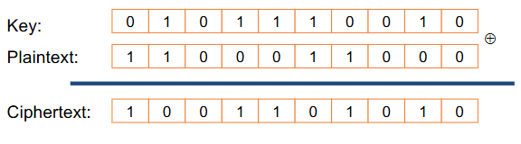
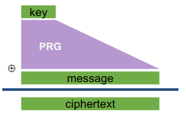
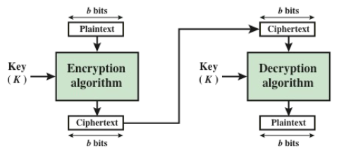
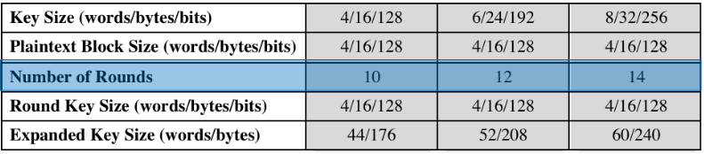
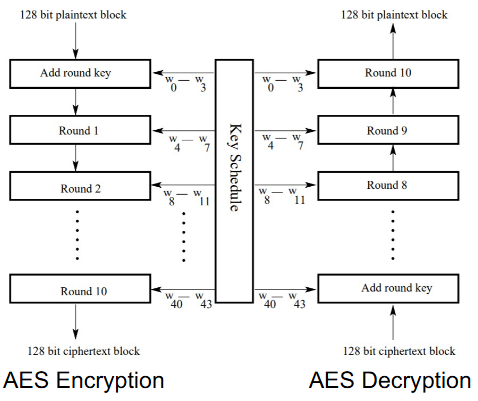

前言
这次学习是因为该课程布置了第一次作业，所以需要补充学习一下遗漏的内容。由于这门课是本研共修课程，在开学第一周本科生们就已经选好课并且开始上课了，但是我们新入学的研究生从第三周才能选好课并开始上课。这导致我最终其实第四周左右才选上这门课，所以遗漏了前面的很多内容，上课时感到很不连贯也就没有细听了，最终决定采用根据PPT自学的形式来完成这次布置的第一次作业。
Lec01 Intro
Ethics：
- 通常可以闯入自己的系统
- 这是评估自己系统的好办法
- 在获得他人明确许可的情况下，通常可以闯入他人的系统
- 未经许可闯入他人的系统是不道德且犯罪的
系统失效的原因：
- Reliability：意外故障
- Usability：因用户操作错误而引起的问题
- Design and goal oversights：设计过程中的疏忽、错误和遗漏
- Security：他人故意造成的故障
Security VS. Correctness：
-
System correctness：
-
系统满足规范
-
对于合理输入，获得合理输出
-
-
System security：
-
在面对攻击时保留系统属性
-
对于不合理的的输入，输出不完全错误
-
主要区别：主动干扰
Course Overview
- 如何考虑安全和隐私
- “Security Mind” ——一种思考系统的全新方式
- Security Principles
- 安全和隐私的技术方面
- 漏洞和攻击技术
- 防御技术
- 如何构建具有强大安全属性的计算机系统
- 如何衡量当今技术提供的保护和限制
- 攻击在实践中的工作原理
- 主题包括
- 基本密码学
- 认证
- 密钥管理
- 可用安全性（人工身份验证）
- 网络安全
- 数据安全和隐私
- 匿名和差分隐私
- 联邦学习
- Emerging Technologies 的安全
- ML的安全性
- 自动驾驶汽车的安全性
Lec02 SecBasics
Objects
Confidentiality（保密性）
- Confidentiality 是信息的隐瞒
- Data Confidentiality：确保私人或机密信息不会提供给或披露给未经授权的个人
- Privacy：确保个人控制或影响哪些和他们有关的信息被收集，以及这些信息会被谁以及向谁披露
Integrity（完整性）
- Integrity 是防止未经授权的更改
- Data Integrity：确保数据和信息仅以指定和授权的方式进行更改
- System Integrity：确保系统以不受损害的方式执行预期功能，不受故意或无意的未经授权的操作对系统执行
Availability（可用性）
- Availability 是使用信息或资源的能力
- 确保系统迅速工作，并且不会拒绝向授权用户提供服务
Thread Modeling
Assets：我们要保护什么？这个资产有多少价值？
Adversaries：(对手)谁可能会尝试攻击，为什么？
Vulnerabilities：系统可能多么薄弱？
Threats：攻击者可能会采取哪些措施来利用漏洞
Risk：资产有多重要？漏洞利用的可能性有多大？
Possible Defenses：
- 不是“传统的”威胁建模，但很重要（无论是整个过程，还是为了在帮助威胁建模之前更好的了解系统）
- 好处：系统可能会使谁受益，以及如何受益
- 危害：系统可能会伤害谁，如何伤害
没有完美的安全，但是攻击者的资源有限。**让他们付出不可接受的代价/承担不可接受的风险来取得成功！**根据上下文来定义安全。
Security Principles
安全原则
Know Your Threat Model
Security is Economics
Secure the Weakest
Defense in Depth
Use Fail-Secure Defaults
Least Privilege
Compartmentalization
Hard to Hide Secrets
Separation of Responsibility
Minimize Attack Surface
Have Good Usability
Detect if You Can’t Prevent
Design in Security from the Start
Principle 0: 了解您的威胁模型
攻击者是谁以及他们拥有哪些资源
Principle 1: 安全就是经济
-
防御成本应低于发生攻击的成本
-
安全性越高（通常）成本越高
-
如果攻击的成本高于奖励，攻击者可能不会这样做
Principle 2：保护最弱者
-
安全是一个链条：系统的安全性取决于最薄弱的环节。
-
将精力花在提高系统最薄弱部分的安全性上，因为这是攻击者攻击的地方。
Principle 3：纵深防御
-
攻击者只需要在一个地方获胜
-
防守方的回应：深度防御
-
应将多种类型的防御措施分层在一起
- 如果一个层失败，希望另一个层可以成功。
-
保护最弱者并深度防御
- 保护最薄弱的环节适用于非重叠函数
- 纵深防御适用于同一功能
层（Layers）
-
计算机系统有多个层
-
硬件组件
-
芯片组 / MB
-
OS
-
TCP / IP
-
HTTP 应用程序
-
安全 http 层
-
Javascript
-
用户/智能卡接口
-
多层防御
- 每一层都引入了额外的安全措施
- 每个层可以包含多个级别的控制
但是要记住
- 防御不是免费的
- 收益递减：防御通常小于其各部分的总和
- 2 堵墙比 1 堵墙好得多
- 101 堵墙并不比 100 堵墙好多少
Principle 4：使用 Fail-Secure 默认值
当系统出现故障时，它们不应恢复到不安全的行为。否则，攻击者只需要调用正确的失败。（故障安全系统）
默认为deny access，比如默认执行 false，只有判断安全才会执行true。
Principle 5：最小权限
只应授予执行操作所需的最低访问权限，并且应仅授予该访问权限所需的最短时间。
当代码可能执行的系统范围操作受到限制时，一个应用程序中的漏洞不能用于利用系统的其余部分。
Principle 6: Compartmentalization
- 将系统分解为尽可能多的独立单元
- 通过将系统分解成多个单元来最大限度地减少可能造成的伤害
- 很少有操作系统这样做，因为它难以管理
- 使用不同的机器执行不同的任务
Principle 7: 难以隐藏secret
-
“机制的安全性不应取决于其设计或实施的保密性。”
-
“即使关于系统的所有内容（除了密钥）都是公共知识，加密系统也应该是安全的。”
——Kerckhoff’s Principle
Principle 8: 责任分离
-
也称为分布式信任
-
如果您需要拥有特权，请考虑要求多方合作（串通）以行使该特权
Principle 9: 最小化攻击面
- 最小化
- 打开的插槽数量
- 服务数量
- 默认运行的服务数量
- 以高权限运行的服务数量
- 动态内容网页数
- 具有管理员权限的帐户数
- 访问控制较弱的文件和目录数量
Principle 10: 具有良好的可用性
-
了解您的用户
- 如果太麻烦，他们会关闭安保。
- 他们不阅读文档
- 他们无视警告 – 他们只想得到他们想要的！
-
如果您的安全机制太烦人和痛苦，您的用户将不遗余力地规避或避免它们。确保您的安全系统达到所需的安全性，但仅此而已。
Principle 11: 如果无法预防，则进行检测
- 威慑：通过让攻击者更喜欢执行其他操作来阻止攻击
- 预防：通过使攻击失败，在攻击发生之前阻止攻击
- 检测：了解存在攻击（发生后）
- 响应：对攻击执行一些操作（在攻击发生后）
Principle 12: 从一开始就进行安全设计
在构建新系统时，请将安全性作为设计注意事项的一部分，而不是在事后对其进行修补。
Lec03 Cryptography Concepts 1
Unconditional vs. Computational Security
- 无条件（或“信息论”）安全性
- 无论有多少计算机能力可用，密码都无法破解
- 密文提供的信息不足以唯一地确定相应的明文
- 计算安全性
- 破解密码的开销超过加密信息的值
- 破解密码所需的时间超过了信息的有效生存期
- 我们将看到的大多数现代方案都被认为是计算安全的
Basic Cryptography Terminology
-
Plaintext – 原始消息
-
Ciphertext – 编码消息
-
Key – 只有发送方/接收方知道的密码中使用的信息
-
Encryption– 将明文转换为密文
-
Decryption – 将密文转换为明文
-
Cipher – 用于执行加密 （encipher） 或解密 （decipher） 的算法
Cryptosystems
- 用于将原始信息转换为密文的操作类型
- 二进制算术: 移位, XORs, ANDs, etc.
- 传统/对称加密
- 整数算术
- 公有密钥/非对称加密
- 二进制算术: 移位, XORs, ANDs, etc.
- 使用的密钥数量
- 对称或传统的（使用单一密钥，Key_A = Key_B）
- 非对称密钥或公钥（2个密钥，一个用于加密，一个用于解密）
- 原始信息的处理方式
- 一次一个比特位——“流密码算法”
- 一个位块——“块密码算法”
Cryptography Roadmap
| 对称密钥 | 非对称密钥 | |
|---|---|---|
| 保密性 | One-time pads Stream ciphers Block ciphers with chaining modes (e.g., AES-CBC) |
RSA encryption |
| 完整性，身份验证 | MACs (e.g., HMAC) | Digital signatures |
Symmetric Key Cryptography
对称密钥加密方案有三个算法：
- KeyGen（） → K：生成一个密钥 K
- Enc（K， M） → C： 使用密钥 K 加密明文 M，生成密文 C
- Dec（K， C） → M：使用密钥 K 解密密文 C
我们希望对称加密方案具有哪些属性？
- 正确性：解密密文应生成最初加密的消息
- 效率：加密/解密算法应该很快
- 给定明文和密钥，计算密文的计算效率很高。
- 给定密文和密钥，计算纯文本的计算效率很高。
- 安全性：保密性
- 给定没有密钥的密文，计算纯文本在计算上是不可行的。
对机密性更好的定义叫做 IND-CPA (indistinguishability under chosen plaintext attack)，在选择明文攻击下的不可区分性。
Classical Ciphers
- 替换密码（也称为“单字母密码”）
- Playfair 密码（普莱费尔密码）
替换密码
- 替代密码用于加密普通英语文本。
- 加密和解密规则都是字母字符的排列。
- 攻击使用 26 个字母及其组合出现的概率。
Playfair 密码
一次加密两个字母
- 如果一对是重复的字母，请插入填充物，例如 “x”。
- 例如，“balloon” 中断为 “ba lx lo on”
- 如果两个字母位于同一行中，请将每个字母替换为向右的字母（从末尾向后换行以开始）。
- 例如，“ar” 加密为 “RM”
- 如果两个字母都在同一列中，请将每个字母替换为其下方的字母（再次从底部换行到顶部）。
- 例如，“mu” 加密为 “CM”
- 否则，每个字母将替换为对中另一个字母的列中其行中的字母。
- 例如，“hs” 加密为 “BP”
One-Time Pad (OTP):
Encryption: 𝐶 = Enc(𝐾, 𝑀) = 𝑀 ⨁ 𝐾 Decryption: Dec(𝐾, 𝐶) = 𝐶 ⨁ 𝐾 = (𝑀 ⨁ 𝐾) ⨁ 𝐾 = 𝑀
密钥 K 是随机选择的 bitstring。
如果对两个密文进行 XOR 运算，就会学习到 M_0 ⊕ M_1！这是有关消息的部分信息！攻击者可以猜M_0并检查M_1是否与她的猜测相符，反之亦然。因此如果密钥被重复使用，则One-Time Pad不安全。
唯一实际应用：提前传达密钥，这样密钥只会用到一次。
Stream Ciphers（流密码）
问题：OTP 密钥与信息的长度相同
解决方案：Pseudo random key - stream ciphers（伪随机密钥 - 流密码）
𝐶 ← PRG(𝐾) ⊕ 𝑀
Block Ciphers（分组密码）
用于加密固定大小的位块
-
分组密码是一种替代密码。
-
每个块都可以被视为一个巨大的字母。
-
“字母表”由 2N个巨大的字母组成。
-
-
每个特定的密码都是从纯文本 “alphabet” 到密文 “alphabet” 的一对一映射。
- 有 2 N个这样的映射。
- 密钥指示要使用哪一个映射。
Feistel Cipher Structure
几乎所有传统的块加密算法（包括 DES）都具有由 IBM 的 Horst Feistel 于 1973 年首次描述的结构。
输入：一个数据块和一个密钥
将数据块分为两半 L 和 R。
经历几轮。在每一轮中，
- R 不会改变。
- L 执行依赖于 R 的运算和从该密钥派生的round key。
Feistel 网络的具体实现取决于以下参数和功能的选择：
- 区块大小：区块大小越大意味着安全性更高
- 密钥大小：密钥大小越大意味着安全性越高
- 回合数：多个回合提供更高的安全性
- 子密钥生成算法：复杂性越高，密码分析难度越大
DES (Data Encryption Standard)
1970 年代/80 年代/90 年代使用最广泛的分组密码。块大小 64 位 （n = 64）;密钥大小 56 位 （k = 56）
但是，由于密钥大小小，现代计算机速度使其完全不安全
Avalanche Effect（雪崩效应）
纯文本或密钥中的微小更改会导致密文发生重大变化。
完备性效果：密文的每个 bit 都需要依赖明文上的很多 bit。DES 中 D-box 和 S-box 产生的扩散和混淆，表现出非常强的完备性效果。
2DES
考虑具有两个密钥的 2DES：
𝑐 = EK2(EK1(𝑚))
𝑚 = DK1(DK2(𝑐))
3DES with 2 Keys
𝑐 = EK3(EK2(EK1(𝑚))) In practice: 𝑐 = EK3(DK2(EK1(𝑚)))
Symmetric Key Cryptography:
Advanced Encryption Standard (AES)
- 密钥大小 128、192 或 256 位（k = 128、192 或 256）
- 实际密码名称为 AES-128、AES-192 和 AES-256
- 像 NSA 这样的偏执狂使用 AES-256 密钥，但 AES-128 在实践中很好
- 块大小 128 位 （n = 128）
- 注意：无论密钥大小如何，块大小仍始终为 128 位
AES 也有字的概念：一个字由四个字节组成，即 32 位。因此，state 数组的每一列都是一个单词，每一行也是如此。
不同的密钥大小使用不同的轮数
每一轮都使用自己的“轮次密钥”，该密钥派生自密码密钥
AES：整体结构
Block 密码只能加密固定大小的消息,如果我们想加密超过 128 位的东西怎么办？
为了解决这些问题，我们将添加使用Block 密码作为构建块的操作模式！